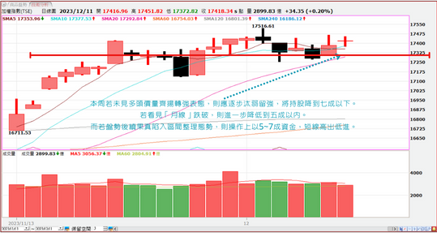
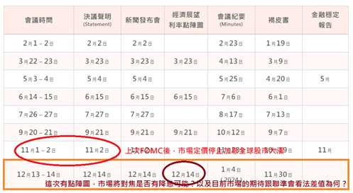

趨勢解盤
【大盤】
台股今日在平盤附80點內狹幅整理，上週12月4號，創下本年新高17516點後，多頭未能乘勝追擊，反而壓回持續量縮整理。本周隨著月線往上推升，來到17292點，多頭近日將再次面臨表態點，尤其上半周理應出量轉強，往上攻擊。否則進入下半周，大家需多加留意，提防空方反撲，短線跌破月線的機率大增，而在跌破後盤勢可能會進入區間整理，空間大約在17300上下200點，則年底前指數間空間有限，操作難度將加大。
類股結構
【電子類股】
電子類股今日維持在5日均線之上，量縮整理。短線仍為盤面強勢主流族群，但大盤後續仍須靠電子股出量往上攻高，方能帶領台股脫離短線多空膠著狀態。其中尤以2330臺積電最為關鍵。今日臺積電雖都在平盤之上，可惜最終收盤未能站上月線575元。 伊森認為不要小看這1塊錢，雖只差1塊錢，但恐怕也是強中透弱的訊息。尤其今天雖然勉強躲過自身月線扣高下壓危機，但明天過後，仍必須持續面對月線扣抵572之上的高檔區。因此，除非臺積電能夠在這幾日看到帶量轉強，否則危機依舊存在。
【金融類股】
金融股方面，今早盤下探接近月線1691點。所幸有守住引線，尾盤收在1699，大約在5日線及10日線的位置點。短線金融與電子類股一樣呈現量縮整理，盤整待變格局，後續幾日仍需觀察月線能否持續守穩，並藉由月線推升力道往上出量轉強。
【航運類股】
航運類股方面，波段人仍以長榮集團最為穩健，包括2603的長榮。今天出量站上前高壓力118.5頸線位置點，相對強勢。2618長榮航則持續沿短均往上維持跌深反彈架構。而上週強勢的散裝航運，短線爆量之後，這幾天拉回整理。目前以2605新興、2612中航、2617台航表現相對強勢。
【鋼鐵類股】
鋼鐵類股，上周指數攻抵年線之後，短線拉回整理尚屬合理。尤其今日強勢指標股2006東鋼持續出量攻高，仍為族群強勢指標。
【強勢族群】
盤面較為強勢的族群以AI相關股為例，有先進封裝族群，包括3711日月投控、6515穎威均有出量創近期高點的表現。其他則有2324仁寶、3653健策、3533嘉澤、3037欣興等表現相對強勢。記憶體族群方面，指標股8299群聯、3260威剛、4967十銓以及5351鈺創等皆屬強勢，短線仍可留意此族群後市表現。
此外，在IC設計方面，IP股有3661世芯Ky持續創波段新高，以及6643M31亮燈漲停帶量創高，強勢演出。8227巨有科、3529力旺及3228金麗科皆有大漲表現。3443創意則是上週五領先轉強攻抵漲停表態後，今天則是拉回稍作休息，5日續守依舊強勢。
IC設計指標股包括2454聯發科、2379瑞昱、3034聯詠等高價指標股皆有守在短天期均線之上，依舊強勢。
在網通族群及光通訊方面，今天包括4908的前鼎盤中攻抵漲停，收盤大漲9%並創高，領動下3363上詮、3163波若威皆帶量轉強，頗有整理過後，準備脫離區間再攻一波的姿態。
車電股方面，今日MLCC的2327國巨再度出量創下波段新高，表現相對搶眼。華新集團的6284佳邦及2492華新科，皆有再度出量轉強的意味，波段仍可留意，皆為車電強勢指標股。傳統車用組裝零組件方面，有2204中華車帶量大漲轉強，帶動其他零組件股，包括1319東陽、6605的帝寶以及1522堤維西等，反應旺季題材，相對強勢。
在綠能族群方面，短線以重電族群及碳權概念股表現為佳。重電股上周有1514亞力、1513中興電、1530士電領先轉強上攻。今日雖然拉回量縮整理，10日續守依舊強勢，後續仍可望出量再攻。而今日重電族群有包括1618合機、1612宏泰、2371大同轉強助攻，接棒演出。因此，重電族群仍為政策概念股當中最為強勢的一群。其次，在碳權方面，整理許久的1907永豐餘、1905華紙、2913農林以及2206的三陽，短線有出量轉強增溫的表現。後續有補漲空間，亦可多加留意。此外，在碳盤查相關軟體公司，如6112邁達特、6214精誠等等軟體股亦是。消費性電子，尤其手機類股方面，2476鉅祥、2392正崴今日皆有出量攻高的表現。
全球總經速遞
就業市場三階段

週五晚間公布的大非農就業數據：
● 新增就業崗位19.5萬，比預期19萬與前值15萬都還要高。
● 失業率3.7%，比前值3.9%大幅回調，有一大影響是三萬汽車罷工工人回到工作崗位。
● 薪資方面也小幅上升，月增0.4%，比上個月0.2%與預期0.3%稍微上升。
另外，就業數據較頻繁更新的就是初領失業救濟金人數，本週仍只有22萬，根據歷史的經驗，通常初領失業救濟金人數要超過40萬人，才表明經濟有問題。
不過更為準確的高頻數據可能會是下圖的“續”領失業救濟金人數，這數據可以顯示想找工作的人卻一直遲遲無法找到工作。這與勞動參與率概念相似，判斷衰退初期是否來臨，想找工作卻找不到工作的比例格外重要。不過最新一週的數據顯示，續領失業救濟金的人數有下滑6.4萬，是9月上升以來最大降幅。
Bloomberg認為感恩節以及聖誕節的到來，這兩個月的就業數據本身就具有季節性優勢而帶來具有韌性的就業市場，要觀察是否有較大的降溫會是過年以後。另外，Bloomberg也給予勞動市場降溫的三階段如下：
1.第一階段：勞動市場火熱，就業需求減少，會反映在Jolts空缺崗位的下滑。
2.第二階段：家庭儲蓄開始見底，人民對於就業依賴度更高，使得勞動參與率上升，但經濟還沒完全崩壞，所以失業率仍低。
3.第三階段：受經濟降溫，企業用人開始驟降，人民勞動參與率持續增加，但是想找工作的人卻找不到工作，因此失業率飆高。
市場邏輯轉向經濟是否軟著陸
目前就業市場的狀態應該正在第二階段進入第三階段的轉換期，本週公佈的就業數據與市場的反應也與過去有不一樣。過去幾個月中，市場的邏輯是經濟的壞消息，對於聯準會的停止升息就越有利，因此估值的釋放願意讓資金進入股市。
不過這次的數據可以看到，失業率的大降，週五的夜盤只有跌公布數據的霎那，但隨後就拉起來，且後續還有公布美國一年期通膨預期大降至3.1%，消費者信心則是大升至69.4，夜盤也是有急拉一波。
過往如果失業率大降和消費者信心大升，基本上股市都是先跌再說，表示市場已經消化停止升息的預期，開始反應明年的降息年，更為重視的是”經濟是否會衰退“。
軟著陸預期（金髮女孩新經濟），市場要看到的是“通膨降溫”、“失業率不飆升”、“消費健康”等對經濟不落入衰退的特徵，這才對股市有利。因此下週12/12所公布的CPI，若能見到2字頭，這對於市場會是利好的現象。
產業快報
AMD Advancing AI
AMD於12/7舉行「Advancing AI」發表會，宣布正式推出其旗艦AI GPU加速器MI300X，意味著AMD與輝達之間的激烈競爭從PC領域全面延伸至AI領域，AMD測試數據顯示其整體性能比輝達H100高出60%。除了如預期發布諸如Instinct MI300X、MI300A等新產品外，在AI領域的國際領導廠也來到現場，例如OpenAI、微軟以及Meta，並表示後續將大量配置AMD Instinct MI300X。AMD新品 AMD Instinct MI300X加速器可用於生成AI，並具有大型語言模型（LLM）訓練和推理性能，此外，還發布AMD Instinct MI300A加速處理單元（APU）—結合最新的AMD CDNA 3架構和“Zen 4” CPU，專為高效能運算和人工智慧工作需求打造。據蘇媽介紹，微軟、Lawrence Livermore國家實驗室的「El Capitan」超級計算機，甲骨文的雲端基礎架構計劃，都成為其客戶。
AMD Instinct MI300X加速器採用全新的AMD CDNA 3架構，與上一代MI250X加速器相比，MI300X的運算單元增加了近40%，記憶體容量增加了1.5倍，峰值理論記憶體頻寬增加了1.7倍。
AMD Instinct MI300X加速器擁有192GB HBM3（第三代高頻寬記憶體）和5.3 TB/s峰值記憶體頻寬，可為需求激增的AI工作負載提供所需的效能。值得留意的是，AMD在發佈公告中提到，與輝達的H100 HGX相比，AMD Instinct 平台在BLOOM 176B4等大語言模型上運行推理可快1.6倍，並且是市場上僅以單一MI300X加速器為70B參數模型（如Llama2）運行推理的唯一選擇，並能簡化企業級大語言模型部署。 更重要的是，AMD宣布推出最新的AMD ROCm 6開放軟體平台，並承諾向開源社群開放最先進的軟體庫，推動其開源AI軟體部署的願景。ROCm 6軟體大幅提升了AI的加速性能，並增加了對生成式AI幾個新關鍵功能的支持。Meta、OpenAI和微軟已表示將使用AMD最新AI晶片Instinct MI300X，或意味著這些正在部署AI的科技巨頭們傾向於尋找其他產品，來取代輝達供應緊缺且昂貴的AI晶片。
蘇媽預計，AI晶片市場到2027年的市場價值可達4000億美元以上，並認為AMD可在其中佔據較大的市場份額。AMD並未揭露MI300X的定價，但輝達目前每顆晶片的成本約為4萬美元，AMD的晶片可能低於輝達的對應產品。 AMD已透露Instinct MI300A和MI300X GPU於第4季量產推進順利，並在第3財季業績發布會上指出，其AI的進展較預期理想，預計第4季數據中心GPU收入約為4億美元，到2024年將超過20億美元；MI300有望成為AMD史上在最短時間內達到銷售額上十億美元的產品。目前市場對於AMD的AI晶片早有預期，但從AMD的業績指引來看，AI的強勁發展或尚未在第4財季獲反映，要到明年才能體現在業績上。
個股解析
【東鋼2006】
屬於傳產-鋼鐵產業，為台灣的電爐煉鋼及軋鋼一貫大廠，產品以鋼筋、型鋼為主，主要用於土木、建築等，為台灣規模最大的 H 型鋼廠商、台灣鋼筋產品三大廠之一。競爭者包含豐興、威致、海光、中鋼等。 公司營運主要受到公共工程支出、民間營建推案、公司擴廠需求等建設情形所影響。近期廢鋼、鋼筋價格區間盤整，但 1H23 H 型鋼庫存水位健康，且公司鋼筋以長單為主，目前訂單能見度到 1Q24，鋼構訂單已接單到 2H24。 東和鋼鐵有連續 23 年穩定配發股利紀錄，配發率平均約 80%，若以目前市場預估 2023 年 EPS 為 6.7 元，依配發率 80% 計算，則目前殖利率約 8.6%，具有高殖利率保護。 籌碼看關聯分點的元大-北成功，還有地緣分點犇亞-鑫豐，進出高低點很不錯。
短線支撐：69.7 波段支撐：68.7
壓力：80
【技嘉2376】
大家應該都非常熟悉技嘉了，點進官網就是大大AI兩個字，想必公司也很清楚自己應該網甚麼產業鍊去布局還有跟市場溝通，近幾月營收有爆發性的成長，主要就是上半年在炒的AI伺服器出貨放量，再加上消費性產品如主機板、顯示卡旺季出貨強勁，Q4因為有聖誕節動能應有望延續，董座甚至公開表示，目前手上新接單的交期甚至長達六個月，AI伺服器成長性沒問題，主要是GPU供不應求，管理層表示，Nvidia的GPU和Broadcom的PCIe交換器目前供應短缺，美系外資認為供應瓶頸應在2024年上半年緩解，近期股價重新挑戰到季線位置，投信回頭買超，兩者同樣具連動性，部分外資法人也認為市場尚未將AI SERVER 對技嘉帶來得潛在獲利考量進去，未來股價成長空間伊森認為仍然很大。
短線支撐：248 波段支撐：238
壓力：290
個股追蹤專區(112/12/11)
| 個股名稱 | 觀察日/(股價) | 今日收盤價 | 短線支撐 | 波段支撐 | 壓力 | 追蹤建議 |
|---|---|---|---|---|---|---|
| 微星2377 | 12/7 (179) | 177 | 172 | 168 | 202 | 狀態2 |
| 華碩2357 | 12/7 (398.5) | 396.5 | 389 | 377 | 430 | 狀態2 |
| 欣興3037 | 11/30 (177) | 178 | -- | 168 | 200 | 狀態5 |
| 健策3653 | 11/30 (648) | 654 | 641 | 624 | 700 | 狀態2 |
| 華新科2492 | 11/22 (122) | 134.5 | 130 | 125 | 150 | 狀態2 |
| 新唐4919 | 11/22 (139.5) | 145.5 | -- | 140 | 155 | 狀態5 |
| 聯發科2454 | 11/21 (942) | 941 | -- | 920 | 1000 | 狀態5 |
| 瑞昱2379 | 11/20 (427.5) | 451 | -- | 440 | 500 | 狀態5 |
| 玉晶光3406 | 11/20 (396.5) | 395 | -- | 386 | 450 | 狀態5 |
| 長榮航2618 | 11/20 (31.5) | 32.05 | 31.4 | 30.5 | 36 | 狀態2 |
| 華城1519 | 11/16 (273) | 339 | -- | 308 | 無 | 狀態5 |
| 川湖2059 | 11/15 (849) | 880 | -- | 835 | 無 | 狀態5 |
| 中興電1513 | 11/06 (100.5) | 126 | -- | 120 | 無 | 狀態1 |
「追蹤個股專區」為伊森過去提出可供觀察之個股
將提供「觀察起始日」、「股號」、「支撐壓力」、「建議」，當標的跌破短線支撐，伊森會進行最新進度更新並改以「波段支撐」持續追蹤，也建議投資人持股減半，但若跌破最後支撐位則更新後不再列入觀察，讀者可以根據支撐壓力觀念自行決定買賣。
再次提醒讀者們，伊森提出推薦的個股不是馬上買馬上漲型，伊森不是希望大家拿到標的就馬上衝進場，而是希望讀者先觀察後續走勢，累積經驗，謹記越靠近支撐價位的風險報酬比越好，也越安全，大家可以耐心觀察，多多等待。
伊森持股追蹤「推薦」狀態名詞解析：
狀態1. 觸及壓力區，達陣獲利一半，持股波段支撐續抱
狀態2. 持股不變，續抱
狀態3. 觸及壓力區，達陣獲利一半，今日破波段支撐出清剩下持股
狀態4. 破短線支撐後，再次突破壓力區，持股獲利一半，剩下續抱
狀態5. 破短線支撐，持股出清一半，其餘續抱
6.破波段支撐，持股全數出清